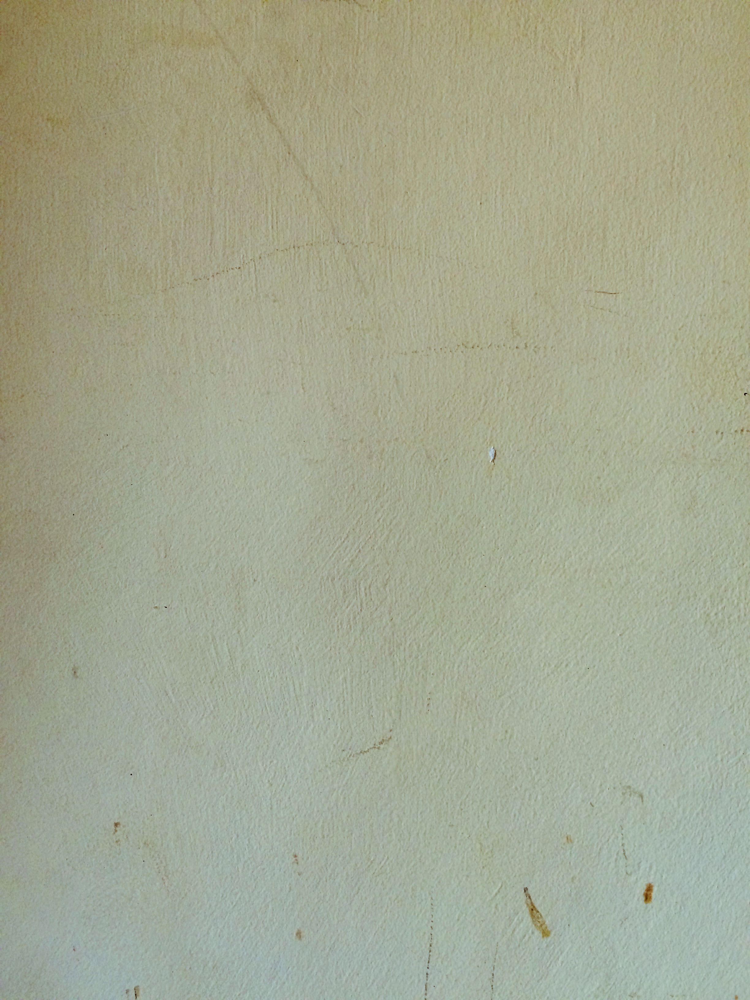

03
Projekti
SumArt razvija autorske, obrazovne, međunarodne i društveno orijentisane programe u oblasti kulture, umetnosti i kreativnog sektora.
Programi povezuju mlade autore, eksperte, vizuelne umetnike, istraživače i partnere iz Srbije, regiona i međunarodne scene.
